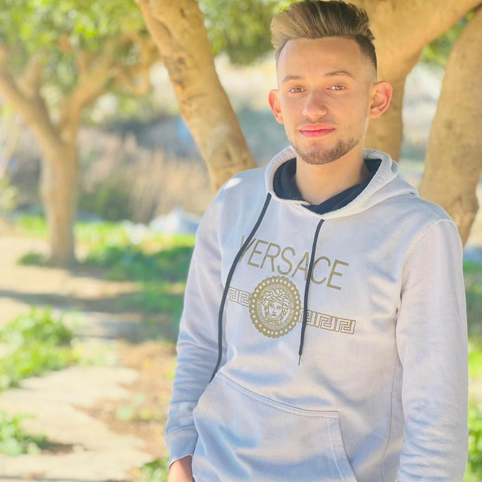
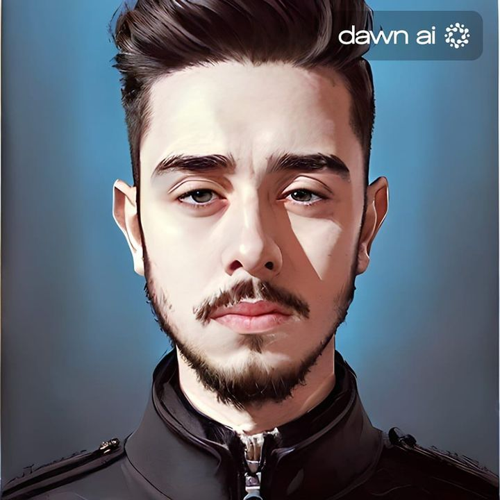

يوسف علي
علم الحـاسوب
إسمي هو يوسف علي إنجاص، لقد أنجزت عددا من المشاريع حتى الآن خلال فترة دراستي مثل:
- نظام تأجير وسائط متعددة بإستخدام لغة الجافا
- مشروع في قواعد البيانات باستخدام لغة سكيول، و الجافا
- مشاريع قي مادة تراكيب البيانات حول مواضيع مختلفة

عبـدالـله سـامي
هندسـة أنظمة الحـاسوب
إسمي هو عبدالله سامي ناصر ، أبلغ من العمر 20 عاماً، أدرس هندسة الحاسوب في جامعة بيرزيت منذ عام 2020، هذه بعض المشاريع التي أنجزتها خلال فترة دراستي:
- نظام تأجير وسائط متعددة بإستخدام لغة الجافا
- وحدة معالجة في مساق الأنظمة الرقمية المتقدمة
- مشاريغ صغيرة باستخدام لغة بايثون
- واجهات ويب
- مشاريع قي مادة تراكيب البيانات حول مواضيع مختلفة

أحمد جـبرا
هندسة أنظمة الحـاسوب
إسمي هو أحمد يعقوب ، أهتم في البرمجة والإلكترونيات
وهذه بعض المشاريع التي أنجزتها، أدرس حاليا تخصص هندسة الحاسوب في جامعة بيرزيت